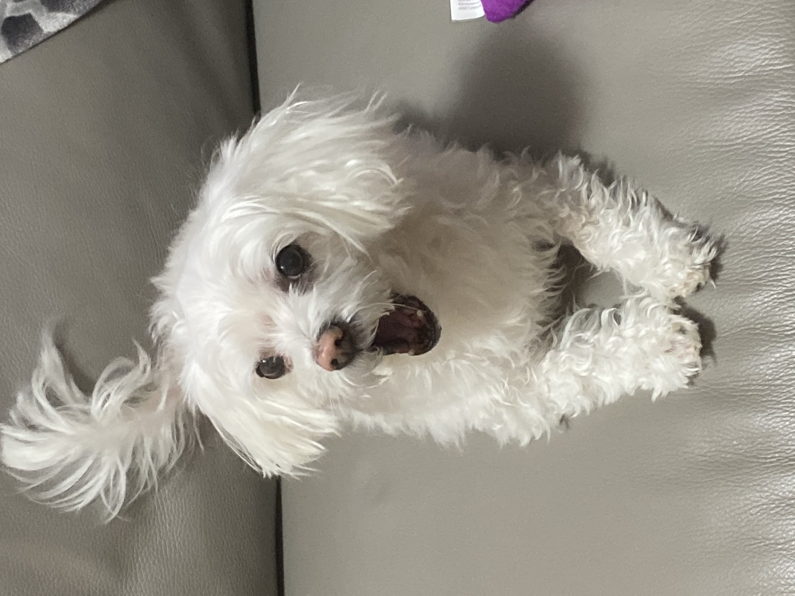

Sally Kim

8/25/23 - I joined this class late, on Tuesday. I was also absent that day, so my first day was Wednesday. I signed into AWS Academy and learned how to get to Cloud9. On Thursday, I did the marble activity and, despite my team's efforts, we did not get the marble in the cup once. The activity really tested my patience.
My Favorite Recipe

9/1/23 - This week I learned how to use Tinkercad. My group and I began brainstorming for our Rube Goldberg project. We sketched ideas on paper. On Challenge Day, we had a competition making home appliances on Tinkercad. I made a washing machine.

9/8/23 - This week went okay. I had a lot of work from some of my classes. I learned better how to use Tinkercad and was able to use it comfortably afterwards. My group (Emma) was very ambitious with our project and decided to use all six of the machines. I think the most challenging part will be the screw.